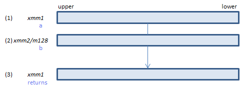
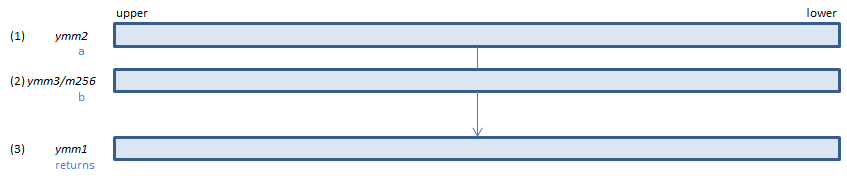

POR - Packed OR
POR xmm1, xmm2/m128 (S2
__m128i _mm_or_si128(__m128i a, __m128i b)

Calculate bitwise (1) | (2) and set the result to (3).
VPOR xmm1, xmm2, xmm3/m128 (V1
__m128i _mm_or_si128(__m128i a, __m128i b)

Calculate bitwise (1) | (2) and set the result to (3).
VPOR ymm1, ymm2, ymm3/m256 (V2
__m256i _mm256_or_si256(__m256i a, __m256i b)

Calculate bitwise (1) | (2) and set the result to (3).
512-bit → VPORQ / VPORD
x86/x64 SIMD Instruction List
Feedback